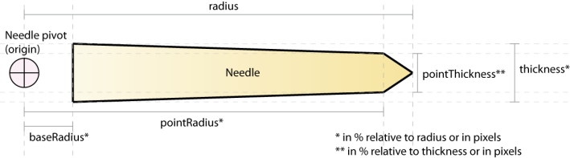

The needle renderer is a visual element responsible for
rendering the needle of the gauge. It references a logical scale to
point to the angle defined by its
value property. A needle can also be represented by an external asset,
see
The CircularGaugeAsset class.
Customizing the geometry of a NeedleRenderer
The following illustration shows the main properties
of a needle to help you customize its geometry.

The following code example shows four options to customize
the needle geometry:
<?xml version="1.0"?>
<mx:Application xmlns:mx="http://www.adobe.com/2006/mxml"
xmlns:ilog="http://www.ilog.com/2007/ilog/flex"
backgroundColor="0xFFFFFF"
>
<mx:Script>
<![CDATA[
import mx.graphics.SolidColor;
]]>
</mx:Script>
<ilog:CircularGauge width="100%" height="100%">
<ilog:scales>
<ilog:CircularLinearScale/>
</ilog:scales>
<ilog:elements>
<ilog:CircularScaleRenderer/>
<ilog:NeedleRenderer
radius="40%"
baseRadius="0%"
thickness="5%"
pointThickness="100%"
pointRadius="95%"
value="0"
editable="true"
fill="{new SolidColor(0xAA0000)}" />
<ilog:NeedleRenderer
radius="40%"
baseRadius="80%"
thickness="10%"
pointThickness="100%"
pointRadius="95%"
value="20"
editable="true"
fill="{new SolidColor(0xAAAA00)}" />
<ilog:NeedleRenderer
radius="40%"
baseRadius="0%"
thickness="10%"
pointThickness="50%"
pointRadius="95%"
value="50"
editable="true"
fill="{new SolidColor(0xAA00AA)}" />
<ilog:NeedleRenderer
radius="40%"
baseRadius="0%"
thickness="10%"
pointThickness="0%"
pointRadius="100%"
value="80"
editable="true"
fill="{new SolidColor(0x00AAAA)}" />
</ilog:elements>
</ilog:CircularGauge>
</mx:Application>
The fill and stroke of a needle can also be changed with
the
fill and
stroke style properties.